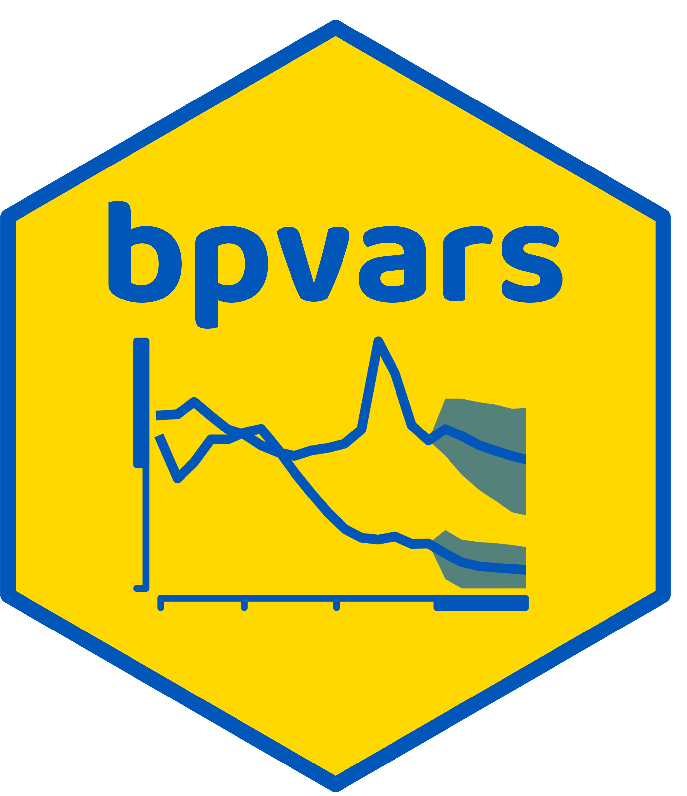
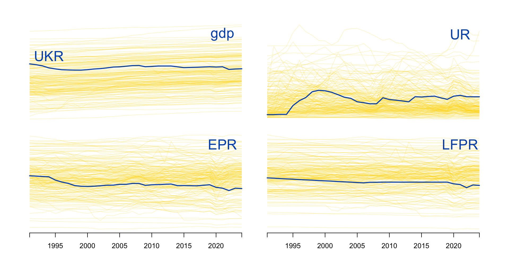
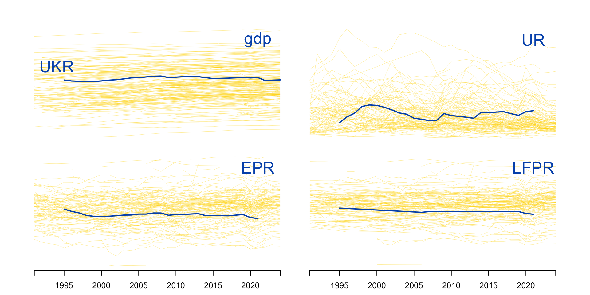
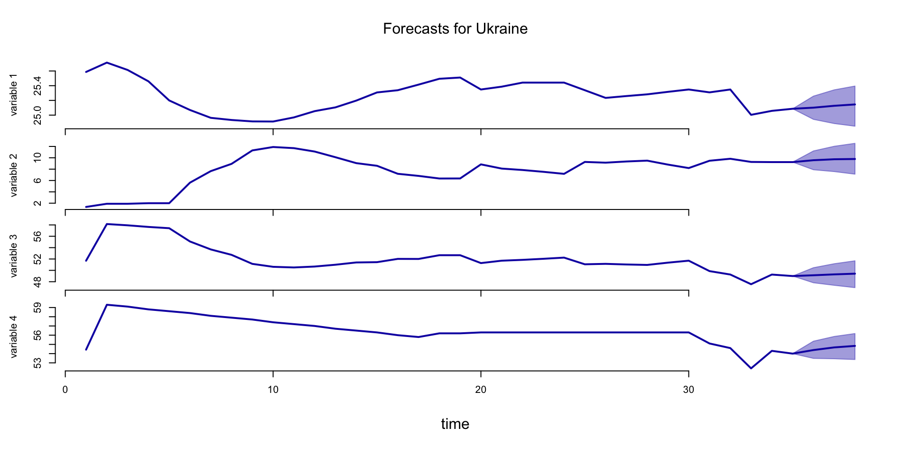
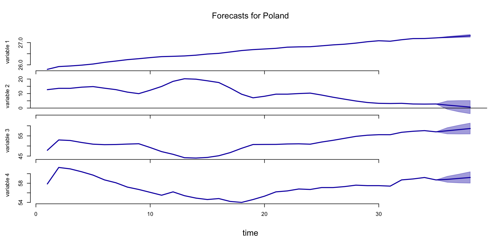
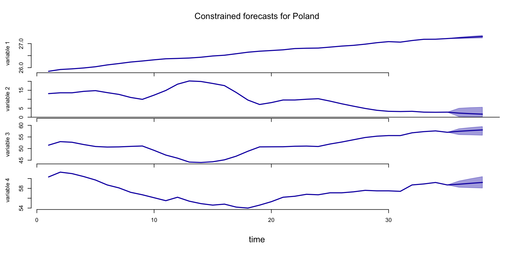

\[ \]
\[ \]

[1] "list"[1] 189[1] "AFG" "AGO" "ALB" "ARE" "ARG" "ARM" "AUS" "AUT"[1] "mts" "ts" "matrix" "array" Time Series:
Start = 1991
End = 2024
Frequency = 1
gdp UR EPR LFPR
1991 25.71370 1.90 58.15509 59.3
1992 25.61361 1.90 57.93048 59.1
1993 25.45946 2.00 57.64665 58.8
1994 25.19947 2.00 57.42150 58.6
1995 25.06967 5.62 55.08324 58.4
1996 24.96315 7.65 53.68562 58.1
1997 24.93391 8.93 52.73129 57.9
1998 24.91443 11.30 51.14242 57.7
1999 24.91292 11.90 50.62464 57.4
2000 24.96890 11.70 50.51012 57.2
2001 25.05400 11.10 50.67319 57.0
2002 25.10529 10.10 50.99131 56.7
2003 25.19719 9.06 51.39188 56.5
2004 25.30823 8.59 51.44275 56.3
2005 25.33839 7.18 52.01967 56.0
2006 25.41461 6.81 52.00934 55.8
2007 25.49395 6.35 52.66820 56.2
2008 25.51076 6.36 52.66755 56.2
2009 25.34824 8.84 51.28025 56.3
2010 25.38670 8.10 51.70251 56.3
2011 25.44176 7.85 51.84859 56.3
2012 25.44176 7.53 52.03579 56.3
2013 25.44176 7.17 52.24385 56.3
2014 25.33839 9.27 51.06789 56.3
2015 25.23413 9.14 51.14697 56.3
2016 25.25909 9.35 51.03466 56.3
2017 25.28239 9.50 50.95610 56.3
2018 25.31636 8.80 51.35674 56.3
2019 25.34824 8.19 51.70339 56.3
2020 25.30925 9.48 49.86714 55.1
2021 25.34824 9.83 49.26562 54.6
2022 25.00409 9.27 47.56067 52.4
2023 25.05794 9.24 49.25887 54.3
2024 25.08636 9.24 48.99957 54.0$UKR
Time Series:
Start = 1991
End = 2024
Frequency = 1
gdp UR EPR LFPR
1991 25.71370 1.90 58.15509 59.3
1992 25.61361 1.90 57.93048 59.1
1993 25.45946 2.00 57.64665 58.8
1994 25.19947 2.00 57.42150 58.6
1995 25.06967 5.62 55.08324 58.4
1996 24.96315 7.65 53.68562 58.1
1997 24.93391 8.93 52.73129 57.9
1998 24.91443 11.30 51.14242 57.7
1999 24.91292 11.90 50.62464 57.4
2000 24.96890 11.70 50.51012 57.2
2001 25.05400 11.10 50.67319 57.0
2002 25.10529 10.10 50.99131 56.7
2003 25.19719 9.06 51.39188 56.5
2004 25.30823 8.59 51.44275 56.3
2005 25.33839 7.18 52.01967 56.0
2006 25.41461 6.81 52.00934 55.8
2007 25.49395 6.35 52.66820 56.2
2008 25.51076 6.36 52.66755 56.2
2009 25.34824 8.84 51.28025 56.3
2010 25.38670 8.10 51.70251 56.3
2011 25.44176 7.85 51.84859 56.3
2012 25.44176 7.53 52.03579 56.3
2013 25.44176 7.17 52.24385 56.3
2014 25.33839 9.27 51.06789 56.3
2015 25.23413 9.14 51.14697 56.3
2016 25.25909 9.35 51.03466 56.3
2017 25.28239 9.50 50.95610 56.3
2018 25.31636 8.80 51.35674 56.3
2019 25.34824 8.19 51.70339 56.3
2020 25.30925 9.48 49.86714 55.1
2021 25.34824 9.83 49.26562 54.6
2022 25.00409 9.27 47.56067 52.4
2023 25.05794 9.24 49.25887 54.3
2024 25.08636 9.24 48.99957 54.0
$FRA
Time Series:
Start = 1991
End = 2024
Frequency = 1
gdp UR EPR LFPR
1991 28.13180 9.13 49.99611 55.0
1992 28.14981 10.20 49.53394 55.2
1993 28.14384 11.30 48.94003 55.2
1994 28.16751 12.60 48.13242 55.1
1995 28.19064 11.80 48.53888 55.1
1996 28.20200 12.40 48.50582 55.4
1997 28.22986 12.60 48.05251 55.0
1998 28.26229 12.10 48.39508 55.0
1999 28.29885 12.00 48.72200 55.4
2000 28.33906 10.20 49.65195 55.3
2001 28.35373 8.61 50.37569 55.1
2002 28.36819 8.70 50.57819 55.4
2003 28.37771 8.31 51.33888 56.0
2004 28.40575 8.91 50.87115 55.8
2005 28.42401 8.88 51.01604 56.0
2006 28.45080 8.83 50.97754 55.9
2007 28.47689 8.01 51.57441 56.1
2008 28.47689 7.39 51.98570 56.1
2009 28.45080 9.12 51.17327 56.3
2010 28.46827 9.28 51.00014 56.2
2011 28.49391 9.23 50.84999 56.0
2012 28.49391 9.84 50.69295 56.2
2013 28.50231 9.91 50.69221 56.3
2014 28.51479 10.30 50.03512 55.8
2015 28.52302 10.40 49.86158 55.6
2016 28.53118 10.10 49.82761 55.4
2017 28.55528 9.41 50.05890 55.3
2018 28.57103 9.02 50.31339 55.3
2019 28.59037 8.41 50.31610 54.9
2020 28.51065 8.01 49.92451 54.3
2021 28.57493 7.87 51.17947 55.6
2022 28.60558 7.30 51.75767 55.8
2023 28.62056 7.34 51.83490 55.9
2024 28.63165 7.40 51.54416 55.7
$ESP
Time Series:
Start = 1991
End = 2024
Frequency = 1
gdp UR EPR LFPR
1991 27.36183 15.90 41.81387 49.7
1992 27.37095 17.70 40.98352 49.8
1993 27.36052 22.20 38.82337 49.9
1994 27.38512 24.20 38.12848 50.3
1995 27.41162 22.70 38.75248 50.1
1996 27.43744 22.10 39.25246 50.4
1997 27.47320 20.70 40.37733 50.9
1998 27.51449 18.70 41.67398 51.2
1999 27.55845 15.50 43.75982 51.8
2000 27.60878 13.80 45.59861 52.9
2001 27.65082 10.30 46.70277 52.1
2002 27.67024 11.10 47.67953 53.7
2003 27.70798 11.30 48.63384 54.8
2004 27.73538 11.10 49.54981 55.7
2005 27.77078 9.15 51.67873 56.9
2006 27.80497 8.45 52.94663 57.8
2007 27.84613 8.23 53.53257 58.3
2008 27.85416 11.30 52.43481 59.1
2009 27.81334 17.90 48.67017 59.3
2010 27.81334 19.90 47.56893 59.4
2011 27.80497 21.40 46.67282 59.4
2012 27.77944 24.80 44.67784 59.4
2013 27.76205 26.10 43.70121 59.1
2014 27.77944 24.40 44.37770 58.7
2015 27.82164 22.10 45.69267 58.6
2016 27.84613 19.60 46.87278 58.3
2017 27.87788 17.20 48.04862 58.0
2018 27.90105 15.30 48.84205 57.6
2019 27.91620 14.10 49.49879 57.6
2020 27.80497 15.50 47.64095 56.4
2021 27.87004 14.90 48.73009 57.3
2022 27.93113 13.00 50.06796 57.6
2023 27.95310 12.20 50.57415 57.6
2024 27.98870 11.40 51.24933 57.8
$SWE
Time Series:
Start = 1991
End = 2024
Frequency = 1
gdp UR EPR LFPR
1991 26.41024 3.24 64.13734 66.3
1992 26.40002 5.72 61.16789 64.9
1993 26.37926 9.33 57.51798 63.4
1994 26.41700 9.58 56.69651 62.7
1995 26.45984 8.90 57.59682 63.2
1996 26.47584 9.55 56.98922 63.0
1997 26.50401 10.40 56.21310 62.7
1998 26.54631 8.94 56.52570 62.1
1999 26.58690 7.61 57.83532 62.6
2000 26.63406 5.47 58.60548 62.0
2001 26.64752 4.73 59.72324 62.7
2002 26.66869 4.97 59.54056 62.7
2003 26.68941 5.55 59.16000 62.6
2004 26.72962 6.69 58.23294 62.4
2005 26.75635 7.81 58.29731 63.2
2006 26.80320 7.07 58.86009 63.3
2007 26.83473 6.16 59.77718 63.7
2008 26.82582 6.24 59.88337 63.9
2009 26.78239 8.35 58.06840 63.4
2010 26.83695 8.61 57.75512 63.2
2011 26.86745 7.80 58.57337 63.5
2012 26.86315 7.98 58.46001 63.5
2013 26.87600 8.05 58.71203 63.9
2014 26.89913 7.95 58.81599 63.9
2015 26.94187 7.43 59.17115 63.9
2016 26.96549 6.99 59.59929 64.1
2017 26.98285 6.72 60.06512 64.4
2018 27.00179 6.36 60.39453 64.5
2019 27.02588 6.83 60.16980 64.6
2020 27.00740 8.29 58.83354 64.2
2021 27.05832 8.80 58.52633 64.2
2022 27.07066 7.42 59.76992 64.6
2023 27.06890 7.61 59.98922 64.9
2024 27.07590 8.40 59.29765 64.7
$NOR
Time Series:
Start = 1991
End = 2024
Frequency = 1
gdp UR EPR LFPR
1991 26.10776 5.41 58.55207 61.9
1992 26.14380 5.91 58.63773 62.3
1993 26.17430 5.97 59.05403 62.8
1994 26.22043 5.35 59.96798 63.4
1995 26.26453 6.31 59.91354 63.9
1996 26.31051 5.04 61.37330 64.6
1997 26.36162 4.69 62.28360 65.3
1998 26.38969 3.74 63.48894 66.0
1999 26.41024 3.25 64.23698 66.4
2000 26.44358 3.46 64.47546 66.8
2001 26.46306 3.74 64.58888 67.1
2002 26.47584 4.02 64.59428 67.3
2003 26.48532 4.22 64.54356 67.4
2004 26.52538 4.26 64.75593 67.6
2005 26.55221 4.38 64.93158 67.9
2006 26.57547 3.40 65.85530 68.2
2007 26.60380 2.49 66.71427 68.4
2008 26.60937 2.52 66.69958 68.4
2009 26.58973 3.10 65.91386 68.0
2010 26.59820 3.53 64.95654 67.3
2011 26.60937 3.20 64.99601 67.1
2012 26.63677 3.13 64.97606 67.1
2013 26.64484 3.42 64.65161 66.9
2014 26.66607 3.49 64.23639 66.6
2015 26.68427 4.30 63.70250 66.6
2016 26.69708 4.68 63.10247 66.2
2017 26.71972 4.16 62.92459 65.7
2018 26.72962 3.80 63.40337 65.9
2019 26.73942 3.68 63.50533 65.9
2020 26.72715 4.42 62.77228 65.7
2021 26.76590 4.36 62.81655 65.7
2022 26.79861 3.23 63.83306 66.0
2023 26.79861 3.57 63.58730 65.9
2024 26.81909 4.00 63.20053 65.8
$DEU
Time Series:
Start = 1991
End = 2024
Frequency = 1
gdp UR EPR LFPR
1991 28.53928 5.32 56.42972 59.6
1992 28.55924 6.32 55.34018 59.1
1993 28.55130 7.68 54.05504 58.5
1994 28.57493 8.73 53.56232 58.7
1995 28.59037 8.16 53.50066 58.3
1996 28.60180 8.82 52.89275 58.0
1997 28.62056 9.86 52.49049 58.2
1998 28.64262 9.79 52.47988 58.2
1999 28.66064 8.85 53.17052 58.3
2000 28.69228 7.92 53.39787 58.0
2001 28.70602 7.77 53.39817 57.9
2002 28.70602 8.48 52.88815 57.8
2003 28.69917 9.78 52.18955 57.8
2004 28.70943 10.70 51.29427 57.5
2005 28.71958 11.20 51.80304 58.3
2006 28.75595 10.30 52.93387 59.0
2007 28.78475 8.73 53.90746 59.1
2008 28.79417 7.51 54.65056 59.1
2009 28.73628 7.88 54.54490 59.2
2010 28.77842 7.04 55.13430 59.3
2011 28.81581 5.97 56.28169 59.9
2012 28.81886 5.37 56.73710 60.0
2013 28.82494 5.32 57.07399 60.3
2014 28.84593 4.98 57.37138 60.4
2015 28.86066 4.61 57.44239 60.2
2016 28.88378 4.10 57.93157 60.4
2017 28.91195 3.78 58.36568 60.7
2018 28.92300 3.38 58.79995 60.9
2019 28.93121 3.16 59.36775 61.3
2020 28.88948 3.88 58.13084 60.5
2021 28.92848 3.59 58.22424 60.4
2022 28.94743 3.14 58.92631 60.8
2023 28.93665 3.07 59.17474 61.0
2024 28.93393 3.40 58.84949 60.9
$FIN
Time Series:
Start = 1991
End = 2024
Frequency = 1
gdp UR EPR LFPR
1991 25.71370 6.50 59.28938 63.4
1992 25.67909 11.60 54.87737 62.1
1993 25.67203 16.20 51.35041 61.3
1994 25.71370 16.40 50.57312 60.5
1995 25.75370 17.00 49.56074 59.7
1996 25.78586 15.60 50.01020 59.2
1997 25.84723 15.00 51.11071 60.1
1998 25.90505 13.20 52.21580 60.2
1999 25.94362 11.70 53.92649 61.1
2000 26.00138 11.10 54.56965 61.4
2001 26.02657 10.30 55.54810 61.9
2002 26.04628 10.40 55.66426 62.1
2003 26.06560 10.50 55.63035 62.1
2004 26.10316 10.40 55.43816 61.8
2005 26.13044 9.60 56.23634 62.2
2006 26.17000 8.94 56.71188 62.3
2007 26.22043 6.85 56.93285 61.1
2008 26.22860 6.37 57.51384 61.4
2009 26.14380 8.25 55.40323 60.4
2010 26.17859 8.39 54.70165 59.7
2011 26.19973 7.78 55.16570 59.8
2012 26.18710 7.69 55.00643 59.6
2013 26.17430 8.19 54.26883 59.1
2014 26.17000 8.66 53.64966 58.7
2015 26.17430 9.38 53.25293 58.8
2016 26.19973 8.82 53.38295 58.5
2017 26.23265 8.64 53.59777 58.7
2018 26.24473 7.36 54.94368 59.3
2019 26.25666 6.70 55.22132 59.2
2020 26.23265 7.76 54.28243 58.8
2021 26.26060 7.62 55.21561 59.8
2022 26.26844 6.72 56.36212 60.4
2023 26.25666 7.15 55.96554 60.3
2024 26.26060 8.40 54.82567 59.9
$POL
Time Series:
Start = 1991
End = 2024
Frequency = 1
gdp UR EPR LFPR
1991 25.92176 13.60 52.98642 61.3
1992 25.94901 13.60 52.71549 61.0
1993 25.98596 14.40 51.72741 60.4
1994 26.03647 14.80 50.89120 59.7
1995 26.11234 13.70 50.65258 58.7
1996 26.17000 12.70 50.72531 58.1
1997 26.23265 11.00 50.94189 57.2
1998 26.27623 9.94 51.10533 56.7
1999 26.32538 12.30 49.22884 56.1
2000 26.36871 14.90 47.20283 55.5
2001 26.38275 18.40 45.86916 56.2
2002 26.40002 20.20 44.18510 55.4
2003 26.43369 19.90 44.01422 54.9
2004 26.48532 18.80 44.31824 54.6
2005 26.51628 17.60 45.15648 54.8
2006 26.57834 13.80 46.71840 54.2
2007 26.64216 9.55 48.85083 54.0
2008 26.68427 7.07 50.72448 54.6
2009 26.71223 8.13 50.76006 55.3
2010 26.74186 9.58 50.78193 56.2
2011 26.79400 9.58 50.99626 56.4
2012 26.80777 10.00 51.07092 56.8
2013 26.81458 10.30 50.88985 56.7
2014 26.85449 8.97 51.95383 57.1
2015 26.89705 7.47 52.80973 57.1
2016 26.92782 6.14 53.78808 57.3
2017 26.97709 4.87 54.76064 57.6
2018 27.03862 3.84 55.32743 57.5
2019 27.08284 3.27 55.59333 57.5
2020 27.06186 3.15 55.58644 57.4
2021 27.12849 3.27 56.77957 58.7
2022 27.18004 2.81 57.28888 58.9
2023 27.18317 2.74 57.60539 59.2
2024 27.21095 2.81 57.00929 58.7
$ITA
Time Series:
Start = 1991
End = 2024
Frequency = 1
gdp UR EPR LFPR
1991 28.09476 10.10 45.25153 50.3
1992 28.10102 9.32 43.99922 48.5
1993 28.09476 10.20 43.08709 48.0
1994 28.11960 11.10 42.00489 47.2
1995 28.14384 11.70 41.40252 46.9
1996 28.15575 11.90 41.66671 47.3
1997 28.17914 12.00 41.62746 47.3
1998 28.19633 12.10 41.80220 47.6
1999 28.21324 11.70 42.21485 47.8
2000 28.25160 10.80 42.63762 47.8
2001 28.26760 9.60 43.28608 47.9
2002 28.27288 9.21 43.80000 48.2
2003 28.27288 8.87 44.31137 48.6
2004 28.28854 7.87 45.59629 49.5
2005 28.29371 7.73 45.13506 48.9
2006 28.31412 6.78 45.56754 48.9
2007 28.32916 6.08 45.62659 48.6
2008 28.31916 6.72 45.63222 48.9
2009 28.26229 7.75 44.54189 48.3
2010 28.27812 8.36 43.98054 48.0
2011 28.28335 8.36 43.87931 47.9
2012 28.25160 10.70 43.60830 48.8
2013 28.23534 12.10 42.60281 48.5
2014 28.23534 12.70 42.55082 48.7
2015 28.24621 11.90 42.83724 48.6
2016 28.25696 11.70 43.41780 49.2
2017 28.27288 11.20 43.95161 49.5
2018 28.27812 10.50 44.39153 49.6
2019 28.28335 9.88 44.68801 49.6
2020 28.19064 9.19 43.78549 48.2
2021 28.27812 9.50 43.84209 48.4
2022 28.32417 8.07 45.07756 49.0
2023 28.32916 7.63 46.00169 49.8
2024 28.33906 6.50 46.36485 49.6
$GBR
Time Series:
Start = 1991
End = 2024
Frequency = 1
gdp UR EPR LFPR
1991 28.19064 8.55 56.67842 62.0
1992 28.19633 9.77 55.52539 61.5
1993 28.21881 10.30 54.71293 61.0
1994 28.25696 9.65 54.95878 60.8
1995 28.28335 8.69 55.35700 60.6
1996 28.30905 8.19 55.72987 60.7
1997 28.35373 7.07 56.55854 60.9
1998 28.38714 6.20 56.99859 60.8
1999 28.41948 6.04 57.40019 61.1
2000 28.45957 5.56 57.92838 61.3
2001 28.48544 4.70 58.10341 61.0
2002 28.50231 5.04 58.16831 61.3
2003 28.53524 4.81 58.41791 61.4
2004 28.55924 4.59 58.59581 61.4
2005 28.58653 4.88 58.65383 61.7
2006 28.60935 5.47 58.70014 62.1
2007 28.63532 5.40 58.59789 61.9
2008 28.63165 5.75 58.61044 62.2
2009 28.58653 7.68 57.23090 62.0
2010 28.60935 7.97 56.87353 61.8
2011 28.62056 8.19 56.71524 61.8
2012 28.63532 8.28 56.85782 62.0
2013 28.65347 7.75 57.20169 62.0
2014 28.68184 6.40 58.15579 62.1
2015 28.70602 5.55 58.79343 62.2
2016 28.72294 4.91 59.34406 62.4
2017 28.74944 4.50 59.60277 62.4
2018 28.76564 4.14 60.02325 62.6
2019 28.78159 3.66 60.33451 62.6
2020 28.67130 4.47 59.77512 62.6
2021 28.75595 4.86 58.95852 62.0
2022 28.80040 3.77 59.57271 61.9
2023 28.80659 4.03 59.32318 61.8
2024 28.81581 4.36 58.87134 61.6\[\begin{align} &\\ \mathbf{y}_{c.t} &= \mathbf{A}_{c.1} \mathbf{y}_{c.t-1} + \mathbf{A}_{d.c}\mathbf{x}_{c.t} + \boldsymbol\epsilon_{c.t}\\[1ex] \boldsymbol\epsilon_{c.t}\mid \mathbf{y}_{c.t-1} & \sim N_4\left(\mathbf{0}_4, \boldsymbol\Sigma_c\right)\\[2ex] \end{align}\]
\[\begin{align} E_\pi\left[\mathbf{A}_{c}\right] &= \mathbf{A}, \qquad \mathbf{A}_{c} = \begin{bmatrix} \mathbf{A}_{c.1} & \mathbf{A}_{d.c} \end{bmatrix}'\\[1ex] E_\pi\left[\boldsymbol\Sigma_c\right] &= \boldsymbol\Sigma\\ \end{align}\]
\[\begin{align} \mathbf{y}_{c.t} &= \mathbf{A}_{1} \mathbf{y}_{c.t-1} + \mathbf{A}_{d}\mathbf{x}_{c.t} + \boldsymbol\epsilon_{c.t}\\[1ex] \boldsymbol\epsilon_{c.t}\mid \mathbf{y}_{c.t-1} & \sim N_4\left(\mathbf{0}_4, \boldsymbol\Sigma\right) \end{align}\]
country-specific parameters \[\begin{align} \mathbf{A}_c, \boldsymbol\Sigma_c | \mathbf{A}, \mathbf{V}, \mathbf{\Sigma}, \nu &\sim MNIW_{K\times N}\left(\mathbf{A}, \mathbf{V}, (N - \nu - 1)\mathbf{\Sigma}, \nu\right)\label{eq:csmnivprior} \end{align}\]
global parameters parameters \[\begin{align} \mathbf{A} \mid \mathbf{V}, m, s &\sim MN_{K\times N}\left(m\underline{\mathbf{M}}, \mathbf{V}, s\underline{\mathbf{S}}\right)\\ \mathbf{\Sigma}\mid s, \mu &\sim W_{N}\left(s\underline{\mathbf{S}}_\Sigma,\mu\right) \end{align}\]
parameters \(\mathbf{A}_c\), \(\boldsymbol\Sigma_c\), \(\mathbf{A}_c\), and \(\boldsymbol\Sigma\) are estimated
\(MNIW\) is a matrix-variate normal inverse Wishart distribution
\(MN\) is a matrix-variate normal and \(W\) a Wishart distribution
mean sd 5% quantile 95% quantile
lag1_var1 -3.43352830 1.0796259 -5.23937549 -1.676313
lag1_var2 -1.02888708 2.2100534 -4.86866367 2.108293
lag1_var3 -2.88180818 3.7762614 -9.50579774 2.529160
lag1_var4 2.61695033 3.4542109 -2.37450766 8.597676
const 105.09458126 39.6885850 43.89327312 172.615999
exo1 0.02717768 0.9128294 -1.44121092 1.530596
exo2 1.44899089 0.8875617 -0.02103142 2.899750
exo3 0.86629228 0.9207812 -0.63840569 2.353713?specify_bvarPANEL to get help for the specification functionstationary set?exogenous??ilo_exogenous_variables to see what’s in that data object.<BVARPANEL>
Public:
adaptiveMH: 0.44 0.6
clone: function (deep = FALSE)
data_matrices: DataMatricesBVARPANEL, R6
get_data_matrices: function ()
get_prior: function ()
get_starting_values: function ()
get_type: function ()
initialize: function (data, p = 1L, exogenous = NULL, stationary = rep(FALSE,
p: 1
prior: PriorBVARPANEL, R6
set_adaptiveMH: function (x)
set_global2pooled: function (x)
set_to_Jarocinski: function ()
starting_values: StartingValuesBVARPANEL, R6
Private:
type: wozniakTime Series:
Start = 1991
End = 2024
Frequency = 1
2008 2020 2021
1991 0 0 0
1992 0 0 0
1993 0 0 0
1994 0 0 0
1995 0 0 0
1996 0 0 0
1997 0 0 0
1998 0 0 0
1999 0 0 0
2000 0 0 0
2001 0 0 0
2002 0 0 0
2003 0 0 0
2004 0 0 0
2005 0 0 0
2006 0 0 0
2007 0 0 0
2008 1 0 0
2009 0 0 0
2010 0 0 0
2011 0 0 0
2012 0 0 0
2013 0 0 0
2014 0 0 0
2015 0 0 0
2016 0 0 0
2017 0 0 0
2018 0 0 0
2019 0 0 0
2020 0 1 0
2021 0 0 1
2022 0 0 0
2023 0 0 0
2024 0 0 0Let each country belong to a group \(c\in g = \{1,\dots,G\}\).
Country-specific parameters become group-specific parameters.
\[\begin{align} &\\ \mathbf{y}_{c.t} &= \mathbf{A}_{g.1} \mathbf{y}_{c.t-1} + \mathbf{A}_{d.g}\mathbf{x}_{c.t} + \boldsymbol\epsilon_{c.t}\\[1ex] \boldsymbol\epsilon_{c.t}\mid \mathbf{y}_{c.t-1} & \sim N_4\left(\mathbf{0}_4, \boldsymbol\Sigma_g\right)\\[1ex] E_\pi\left[\mathbf{A}_{g}\right] &= \mathbf{A}\\[1ex] E_\pi\left[\boldsymbol\Sigma_c\right] &= \boldsymbol\Sigma\\ \end{align}\]
c_select = c("UKR","FRA","ESP","SWE","NOR",
"DEU","FIN","POL","ITA","GBR")
specg = bvarGroupPANEL$new(
ilo_dynamic_panel[c_select],
exogenous = ilo_exogenous_variables[c_select],
group_allocation = c(1,2,2,1,2,2,1,1,2,2)
)
burng = estimate(specg, S = 5000, show_progress = FALSE)
postg = estimate(burng, S = 5000)Let each country belong to a group \(c\in g = \{1,\dots,G\}\).
Country-specific parameters have group-specific prior mean.
\[\begin{align} &\\ \mathbf{y}_{c.t} &= \mathbf{A}_{c.1} \mathbf{y}_{c.t-1} + \mathbf{A}_{d.c}\mathbf{x}_{c.t} + \boldsymbol\epsilon_{c.t}\\[1ex] \boldsymbol\epsilon_{c.t}\mid \mathbf{y}_{c.t-1} & \sim N_4\left(\mathbf{0}_4, \boldsymbol\Sigma_c\right)\\[1ex] E_\pi\left[\mathbf{A}_{c}\right] &= \mathbf{A}_g\\[1ex] E_\pi\left[\boldsymbol\Sigma_c\right] &= \boldsymbol\Sigma_g\\ \end{align}\]
c_select = c("UKR","FRA","ESP","SWE","NOR",
"DEU","FIN","POL","ITA","GBR")
specp = bvarGroupPriorPANEL$new(
ilo_dynamic_panel[c_select],
exogenous = ilo_exogenous_variables[c_select],
group_allocation = c(1,2,2,1,2,2,1,1,2,2)
)
burnp = estimate(specp, S = 5000, show_progress = FALSE)
postp = estimate(burnp, S = 5000)
\[\begin{align} p\left(\mathbf{y}_{c.m}\mid \mathbf{y}_{c.o},\mathbf{A}_{c},\boldsymbol\Sigma_c\right) \end{align}\]
\[\begin{align} &\\ {\color{lig}p\left(\mathbf{y}_{c.t+1}\mid \mathbf{y}_{c.t},\mathbf{A}_{c},\boldsymbol\Sigma_c\right)} & = N_4\left(\mathbf{A}_{c.1} \mathbf{y}_{c.t} + \mathbf{A}_{d.c}\mathbf{x}_{c.t+1}, \boldsymbol\Sigma_c\right)\\[5ex] \end{align}\]
\[\begin{align} p\left(\mathbf{y}_{c.t+h},\dots,\mathbf{y}_{c.t+1}\mid \mathbf{Y}_{c.t}\right) &= \int p\left(\mathbf{y}_{c.t+h},\dots,\mathbf{y}_{c.t+1},\mathbf{A}_{c},\boldsymbol\Sigma_c\mid \mathbf{Y}_{c.t}\right)d\left(\mathbf{A}_{c},\boldsymbol\Sigma_c\right) \end{align}\]


**************************************************|
bpvars: Forecasting with Bayesian Panel VARs |
**************************************************|
Progress of the MCMC simulation for 5000 draws
Every draw is saved via MCMC thinning
Press Esc to interrupt the computations
**************************************************|
**************************************************|
bpvars: Forecasting with Bayesian Panel VARs |
**************************************************|
Progress of the MCMC simulation for 5000 draws
Every draw is saved via MCMC thinning
Press Esc to interrupt the computations
**************************************************|